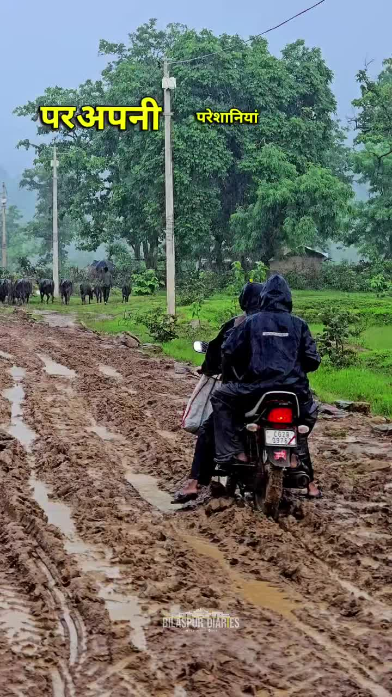

Bilaspur News Hub
2
BUSINESS
2
EDUCATION
6
EVENT
13
GOVERNMENT
4
HEALTH
1
INFRASTRUCTURE
9
INSTAGRAM NEWS
11
NEWS
1
OTHER
7
POLICE
1
RAILWAY
2
SOCIAL
14
YOUTUBE VIDEOS
BUSINESS2

Lokswar · Published: Sat, 01 Au | Scraped: 2026-08-01 12:50:53
Congress committee in Gaurela-Pendra-Marwahi announced a house-to-house campaign and planned a siege of the CM's residence to oppose recent electricity tariff increases and the installation of smart meters. The move aims to mobilize public discontent.

The Hitavada · Scraped: 2026-08-01 08:00:25
MTDC is seeking land in the city for the Shiv Srushti project, aiming to boost tourism in Vidarbha. The initiative promises infrastructure upgrades and economic benefits.
EDUCATION2

Lokswar · Published: Sat, 01 Au | Scraped: 2026-08-01 14:54:50
A viral video from a Janjgir‑Champa school led to swift action; the headmaster was suspended. The case underscores conduct concerns in education. Further investigation is ongoing.

The Hitavada · Scraped: 2026-08-01 08:00:25
एम्स के डॉक्टरों ने दांत निकालने की प्रक्रिया को आसान बनाने के लिए एक स्वदेशी उपकरण विकसित किया है, जो दर्द, समय और जटिलताओं को कम करता है। यह चिकित्सा नवाचार में भारत की बढ़ती क्षमता को दर्शाता है।
EVENT6

The Hitavada · Scraped: 2026-08-01 08:00:25
The annual Kanwar Yatra began in the city, with devotees carrying holy water from the Ganges. The procession is expected to pass through major streets, drawing large crowds and traffic disruptions. Local authorities have arranged security and medical support.

Kalash with sacred soil from Varanasi reaches Raipur / वाराणसी से पवित्र मिट्टी का कलश रायपुर पहुँचा
The Hitavada · Scraped: 2026-08-01 08:00:25
A Kalash carrying sacred soil from Varanasi has arrived in Raipur for the upcoming religious ceremony. The soil will be used in rituals to invoke blessings and cultural heritage. The event has drawn attention from local devotees and authorities.
The Hitavada · Scraped: 2026-08-01 08:00:25
Suman has secured a spot in the HYROX World Championship, marking a major achievement in the sport. This qualification highlights her dedication and competitive performance.

The Hitavada · Scraped: 2026-08-01 08:00:25
An inter-department swimming event took place, featuring participants from various organizations. The competition showcased talent and promoted teamwork through aquatic sports. Officials praised the organization and enthusiastic participation.

The Hitavada · Scraped: 2026-08-01 08:00:25
The VCA will felicitate the victorious team of the Vijay Hazare tournament this Sunday. The ceremony recognizes the team's outstanding performance. Fans and officials are expected to attend.
The Hitavada · Scraped: 2026-08-01 08:00:25
Heavy rains turned the field into slush, forcing the match to be decided by shoot-outs only. The weather made normal play impossible, leading to a dramatic penalty shootout. Both teams displayed skill under adverse conditions.
GOVERNMENT13

CG Wall · Published: Sat, 01 Au | Scraped: 2026-08-01 08:00:25
The Chhattisgarh High Court in Bilaspur has adopted a firm approach toward cases involving elected representatives, ensuring no leniency for MPs and MLAs. This move aims to expedite justice and hold public servants accountable.

BREAKINGTwo women die in car crash involving Bilaspur CMO / दो महिलाओं की मौत सीएमओ की कार से टक्कर के बाद
Nai Dunia Bilaspur · Published: Sat, 01 Au | Scraped: 2026-08-01 12:50:53
A car driven by the Takhatpur CMO collided with two women while returning from a Congress leader's birthday party, resulting in their deaths. The incident has sparked outrage and prompted calls for stricter traffic safety measures.

Lokswar · Published: Sat, 01 Au | Scraped: 2026-08-01 12:50:53
The Chhattisgarh government announced financial aid of ₹20 lakh to each family of workers killed in the Pulwama terrorist attack. The decision follows the tragic loss and aims to support the bereaved families.

CG Wall · Published: Sat, 01 Au | Scraped: 2026-08-01 14:54:50
High Court monitors SIMS traffic, launching anti‑jam drive to clear persistent congestion. Continuous judicial oversight will ensure orderly flow and compliance.

CG Wall · Published: Sat, 01 Au | Scraped: 2026-08-01 14:54:50
Chief Justice inspected the district court to assess operations and ensure transparent justice. He reviewed case handling, staff coordination, and public access. The visit aims to boost judicial efficiency.

CG Wall · Published: Sat, 01 Au | Scraped: 2026-08-01 14:54:50
Rising electricity rates and smart meters spark public anger; Congress vows two‑month protest from Aug 2. Party accuses BJP of favouring corporate interests over consumers. The agitation seeks tariff rollback.

CG Wall · Published: Fri, 31 Ju | Scraped: 2026-07-31 17:25:00
A defect was discovered in the Atal Bihari Vajpayee statue at Katghora’s Atal Complex, prompting the immediate suspension of a sub-engineer. Authorities have launched an inquiry to determine the cause of the flaw.

The Hitavada · Scraped: 2026-08-01 08:00:25
Prime Minister Narendra Modi spoke with UK Prime Minister Burnham, discussing bilateral ties and regional issues. The conversation underscored cooperation on climate, trade, and security matters.

The Hitavada · Scraped: 2026-08-01 08:00:25
Governor Jishnu Dev Varma visited the city today, meeting officials and reviewing development projects. The visit highlighted focus on regional growth and governance.
The Hitavada · Scraped: 2026-08-01 08:00:25
The Chief Minister will inaugurate development projects exceeding Rs 400 crore, focusing on roads, schools, and health facilities. The projects aim to boost local infrastructure and employment. Residents are hopeful for improved services.
The Hitavada · Scraped: 2026-08-01 08:00:25
The Congress party will begin a statewide agitation against recent electricity tariff hikes and the installation of smart meters. The protest aims to pressure the government for affordable rates and transparency. Leaders have called for public participation and planned meetings across districts.
The Hitavada · Scraped: 2026-08-01 08:00:25
The BJP claimed that the Chhattisgarh government has revamped its administrative system over the past two years. The party highlighted improvements in governance, infrastructure, and public services. Opposition parties have mixed reactions to the statement.
The Hitavada · Scraped: 2026-08-01 08:00:25
मुख्यमंत्री ने प्रधानमंत्री मोदी के समक्ष बस्तर के विकास का खाका प्रस्तुत किया, जिसमें बुनियादी ढाँचे, शिक्षा और स्वास्थ्य सेवाओं को बढ़ावा देने के लिए प्रमुख पहल शामिल हैं। यह योजना क्षेत्र के सामाजिक-आर्थिक परिदृश्य को बदलने की दिशा में एक महत्वपूर्ण कदम है।
HEALTH4

Lokswar · Published: Sat, 01 Au | Scraped: 2026-08-01 09:53:34
Bilaspur mental hospital introduces open‑air therapy and natural treatment methods, offering compassionate care for patients. This marks a positive shift toward humane and effective mental health rehabilitation.

CG Wall · Published: Sat, 01 Au | Scraped: 2026-08-01 14:54:50
Chhattisgarh bans fake paneer sold as cheese to protect consumer health. The strict ban targets adulterated products, warning sellers of penalties. Authorities stress food safety.

Lokswar · Published: Fri, 31 Ju | Scraped: 2026-07-31 17:25:00
The collector has ordered a strict investigation into alleged irregularities surrounding the construction of the modular eye operation theatre at Bilaspur District Hospital, focusing on quality, payments, and commission. The probe aims to ensure transparency and proper fund usage.

The Hitavada · Scraped: 2026-08-01 08:00:25
अस्पतालों में वायरल बुखार और श्वसन रोगियों में 20-30% की वृद्धि दर्ज की गई है, जो संभवतः मौसमी परिवर्तन के कारण स्वास्थ्य संबंधी चिंताओं को बढ़ा रही है। अधिकारियों से चिकित्सा सुविधाओं और जन जागरूकता को बढ़ाने का आग्रह किया जा रहा है।
INFRASTRUCTURE1

The Hitavada · Scraped: 2026-08-01 08:00:25
A building collapsed in Bhiwandi, resulting in ten fatalities and raising concerns over construction safety. Authorities have launched an investigation and begun rescue operations for survivors.
INSTAGRAM NEWS9

An Instagram post from Bilaspur Diaries highlights a quirky village attendance board placed in an unexpected spot, drawing attention to local governance practices. The image has resonated with viewers, showcasing rural administrative details in a humorous way.

The post showcases vibrant monsoon landscapes across Chhattisgarh, featuring lush greenery, flowing rivers, and traditional life amid rains. It highlights the state's natural beauty during the rainy season, attracting appreciation from followers.
The poster recounts traveling from Bilaspur to Raipur solely to visit a showroom, only to find the experience far below expectations. The long journey and the poor quality of the display left them disappointed, prompting a rethink of such trips.
![Featured Image]()
Police say the intruders entered the secured flat at Pooja Enclave on Sunday night, stealing valuables. No suspects have been identified yet, and an investigation is underway.
![Featured Image]()
The latest fatality marks the fifth death at Bilaspur Central Jail in just a few days, prompting calls for a judicial inquiry. Authorities have ordered a review of prison safety protocols and a probe into possible negligence.
During an unannounced inspection, the collector found several doctors absent from the district hospital and expressed strong displeasure. The incident highlights staffing problems and calls for immediate corrective measures.
Collector Sanjay Agarwal has initiated steps to strengthen maternal and child health services across the district, including training, resource allocation, and monitoring. The aim is to make healthcare more effective for mothers and infants.
A dignified ceremony was held at Bilaspur Reserve Centre to honor the Senior Police Superintendent. The event highlighted contributions to law enforcement and community safety.
Collector Sanjay Agarwal has initiated measures to strengthen maternal and child health services in the district. The focus is on improving access, quality care, and awareness for better health outcomes.
NEWS11

Lokswar · Published: Sat, 01 Au | Scraped: 2026-08-01 08:00:25
<p>रायगढ़ जिले के खरसिया क्षेत्र के भूपदेवपुर थाना अंतर्गत झीटीपाली गांव में देर रात सड़क किनारे खड़े दो ट्रेलरों में अचानक भीषण आग लग गई। आग इतनी तेज थी कि दोनों ट्रेलरों के केबिन पूरी तरह जलकर राख हो गए। सुबह ग्रामीणों की नजर पड़ी तो घटना का खुलासा हुआ। हादसे में लाखों रुपये के …</p>
<p>The

Lokswar · Published: Sat, 01 Au | Scraped: 2026-08-01 08:00:25
<p>बेमेतरा पुलिस ने करीब 14 करोड़ 56 लाख रुपये के बैंक घोटाले का पर्दाफाश करते हुए इंडियन ओवरसीज बैंक के पूर्व शाखा प्रबंधक विनीत दास को तमिलनाडु के तंजावुर से गिरफ्तार किया है। आरोपी पर बैंक के नियमों का उल्लंघन कर फर्जी ऋण स्वीकृत करने, खातों में अनधिकृत लेनदेन करने और बैंक को करोड़ों रुपये …
Lokswar · Published: Sat, 01 Au | Scraped: 2026-08-01 08:00:25
<p>(राम प्रसाद गुप्ता) : नागपुर/एमसीबी। सड़क दुर्घटनाओं पर प्रभावी अंकुश लगाने और युवाओं में यातायात नियमों के प्रति जागरूकता बढ़ाने के उद्देश्य से पुलिस सहायता केंद्र नागपुर द्वारा हाईस्कूल बरबसपुर में विशेष सड़क सुरक्षा और यातायात जागरूकता कार्यक्रम आयोजित किया गया। यह अभियान पुलिस अधीक्षक एमसीबी

Lokswar · Published: Sat, 01 Au | Scraped: 2026-08-01 09:53:35
Meteorologists predict a weaker monsoon in August, with reduced rainfall across the state. This could affect agriculture and water resources, prompting authorities to monitor the situation.
Lokswar · Published: Fri, 31 Ju | Scraped: 2026-07-31 19:14:03
Terrorists opened fire in Jammu and Kashmir's Kulgam district on Friday, resulting in the death of a non-local laborer from Chhattisgarh. The incident has sparked condemnation and heightened security concerns in the region.
The Hitavada · Scraped: 2026-08-01 08:00:25

The Hitavada · Scraped: 2026-08-01 08:00:25
The Hitavada · Scraped: 2026-08-01 08:00:25
The Hitavada · Scraped: 2026-08-01 08:00:25
The Hitavada · Scraped: 2026-08-01 08:00:25
The Hitavada · Scraped: 2026-08-01 08:00:25
विदर्भ के निम्न दबाव के कारण मध्य प्रदेश में भारी बारिश हुई है, जिसमें गोगावां में 190 मिमी बारिश दर्ज की गई है। आज भी बिखरी हुई से अलग-अलग बारिश की संभावना है, जिससे यात्रा और कृषि पर प्रभाव पड़ सकता है। यह मौसम प्रणाली क्षेत्र के जलवायु परिदृश्य को प्रभावित कर रही है।
OTHER1
The Hitavada · Scraped: 2026-08-01 08:00:25
A discarded SpaceX rocket, traveling at 8,700 kph, is set to impact the Moon on August 5. The event draws attention to space debris and its potential risks to lunar missions.
POLICE7

Nai Dunia Bilaspur · Published: Sat, 01 Au | Scraped: 2026-08-01 09:53:34
A man in Bilaspur killed his girlfriend after accusing her of wandering, strangling her to death. Police are investigating the murder, which underscores rising violence in love relationships.

Lokswar · Published: Sat, 01 Au | Scraped: 2026-08-01 09:53:34
Durg police returned 200 lost mobile phones to their owners, showcasing community trust and social policing. The initiative strengthens public confidence in law enforcement.
Lokswar · Published: Sat, 01 Au | Scraped: 2026-08-01 12:50:53
Police Superintendent Vijay Kumar Pandey opened a new outpost at Kharoud Nagar Panchayat, aiming to improve law enforcement and community safety. The facility will serve the local population with quicker response times.

The Hitavada · Scraped: 2026-08-01 08:00:25
The families of Delhi police officers injured during a CJP protest are urging Parliament to address their plight and ensure justice. They highlight the sacrifices made by uniform bearers and call for government support.

The Hitavada · Scraped: 2026-08-01 08:00:25
A former AAP councillor, Tahir, and four accomplices received life sentences for murdering an IB officer. The case underscores the gravity of targeting security personnel and reinforces judicial deterrence.
The Hitavada · Scraped: 2026-08-01 08:00:25
CBDT is scanning city taxpayers for filing bogus ITRs, targeting tax fraud. The crackdown aims to ensure compliance and curb illegal claims.
BREAKINGCops nab couple in illegal liquor trade / पुलिस ने अवैध शराब कारोबार में जोड़े को गिरफ्तार किया
The Hitavada · Scraped: 2026-08-01 08:00:25
Police arrested a couple involved in illegal liquor trade, seizing contraband. The operation reflects efforts to curb illicit alcohol sales.
RAILWAY1

Nai Dunia Bilaspur · Published: Sat, 01 Au | Scraped: 2026-08-01 05:28:45
The long-awaited Katghora‑Dongargarh rail line in Chhattisgarh has finally received government approval, ending a 16‑year struggle. Once completed, the line will improve connectivity and boost regional development. The decision marks a significant victory for local commuters and businesses.
SOCIAL2
Protesters rally against MPMSU bifurcation / कई संगठनों ने एमपीएमएसयू के विभाजन के खिलाफ सड़क पर उतरे
The Hitavada · Scraped: 2026-08-01 08:00:25
Various organizations protested the bifurcation of MPMSU, calling it detrimental to students. The demonstration highlighted concerns over administrative changes.
BREAKINGGas victims claim 70% water samples contaminated, BMC denies / गैस पीड़ितों ने 70% पानी के नमूनों में fecal संदूषण का आरोप लगाया, बीएमसी ने खारिज किया
The Hitavada · Scraped: 2026-08-01 08:00:25
गैस प्रभावित निवासियों ने दावा किया कि 70% पानी के नमूनों में fecal संदूषण पाया गया है, जिससे स्वास्थ्य संबंधी चिंताएँ बढ़ गई हैं। बीएमसी ने इन निष्कर्षों को अविश्वसनीय और अनुचित पद्धति बताते हुए खारिज कर दिया है, जिससे क्षेत्र में पानी की सुरक्षा को लेकर चिंताएँ बनी हुई हैं।
YOUTUBE VIDEOS14


GRAND NEWS BILASPUR: FINAL NEWS 01.08.2026 MORNING @News18MPChhattisgarh @IBC24InNews @ZeeNews ...
A headmaster in Bilaspur was criticized for his rude behavior, prompting calls for disciplinary action. The incident highlights concerns over teacher conduct and student welfare.
A terrorist attack in Kulgam has resulted in multiple injuries and prompted a swift response from security forces. The incident highlights ongoing security challenges in the region and has drawn widespread condemnation.


The evening final news bulletin for Bilaspur on 01.08.2026 covers latest updates and events across the region. It provides a concise roundup of the day's key happenings.
Residents of Tifra have launched protests against the government's demolition of illegal encroachments, fearing loss of livelihood. The demonstration highlights tensions between urban planning and local rights.
A large-scale demonstration was organized in Bilaspur against the recent electricity tariff hike and the introduction of smart meters. Protesters demanded a rollback of the price increase and a review of the metering policy.
Two migrant workers from Chhattisgarh were killed in a terrorist attack in Anantnag, sparking nationwide outrage. The incident has prompted calls for stronger security measures and support for affected families.
The health department has taken decisive action in the corpse hostage case, sealing the facility and initiating investigations. Authorities aim to prevent such violations and ensure proper handling of deceased patients.
बलौदाबाजार में दुर्घटनाजन्य स्थलों पर यातायात पुलिस का सुरक्षा अभियान तेज, डिवाइडरों पर रेडियम
महाविद्यालयों में प्रवेश के अंतिम दौर में उमड़ी विद्यार्थियों की भीड़, बीए-बीकॉम की सबसे ज्यादा मांग
महाविद्यालयों में प्रवेश के अंतिम दौर में उमड़ी विद्यार्थियों की भीड़, बीए-बीकॉम की सबसे ज्यादा मांग
कटघोरा-डोंगरगढ़ रेल लाइन परियोजना को केंद्र की मंजूरी
अनंतनाग आतंकी हमले में छत्तीसगढ़ के दो श्रमिकों की मौत, नेताओं ने जताया शोक
Officials visited the hospital and spoke directly with patients to evaluate the quality of healthcare services. Their feedback will help identify shortcomings and improve the overall patient experience.